Pintura e Ilustração
Vamos raciocinar um pouco, no desenho vetorial, podemos criar e editar vetores, a edição é feita com ferramentas como o editor de nós, e a criação é feita com ferramentas como retângulo ou uma caneta bézier. Você viu até agora como é feita a edição de bitmaps, mas e a criação?
A criação de um bitmap pode acontecer de forma automática, como em uma foto tirada por uma câmera ou numa imagem renderizada num software com recursos de renderização (exemplo, softwares de animação e de 3D), em ambos os casos os bitmaps são criados a partir de cálculos computacionais. A segunda forma é criar manualmente (digamos), com o uso de ferramentas de Pintura Digital. Não estamos incluindo aqui imagens criadas a partir de montagens de partes de imagens já existentes.
A Pintura Digital consiste em utilizar pinceis para colorir certa quantidade de pixels sobre uma base, ou tela de fundo, onde todos os pixels estão transparentes (pode ainda ser uma tela de fundo branca ou de qualquer outra cor uniforme).
Traço de pincel ampliado:
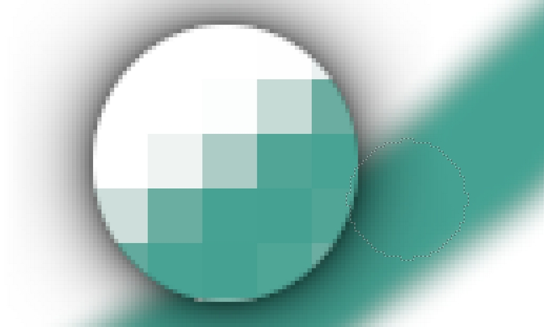Todo software de edição de bitmap possui recursos de pincel especiais para pintura.
Paleta de pincéis do GIMP:
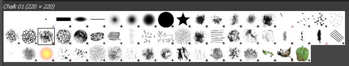Apesar da Pintura e da Ilustração não constituírem trabalho com edição e manipulação de imagens, faz parte do trabalho com bitmaps e é uma das funções dos softwares de edição de bitmap. Tenha em mente que estamos entrando em um mundo completamente diferente que é o mundo da ilustração e que possui muito a se aprender. Uma ilustração geralmente inclui as seguintes etapas:
Croqui
Esta é a primeira etapa do processo de desenho, e onde exige a maior capacidade de observação das referências. É nesta etapa em que rascunhamos as formas do desenho que faremos numa camada base:
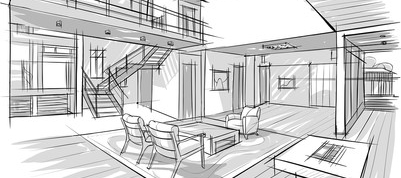Cor
Etapa em que adicionamos as cores de preenchimento ao desenho. Geralmente feita em mais de uma camada:
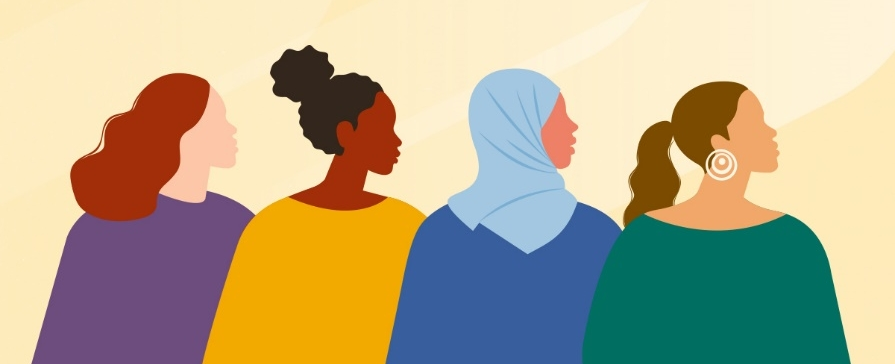Line-art
Etapa em que as linhas, quando necessárias, são aperfeiçoadas ganhando nitidez e ajustando suas espessuras de acordo com a necessidade:

Sombra e Luz
Etapa de finalização em que o desenho começa a ganhar realismo reagindo a fontes de luz:
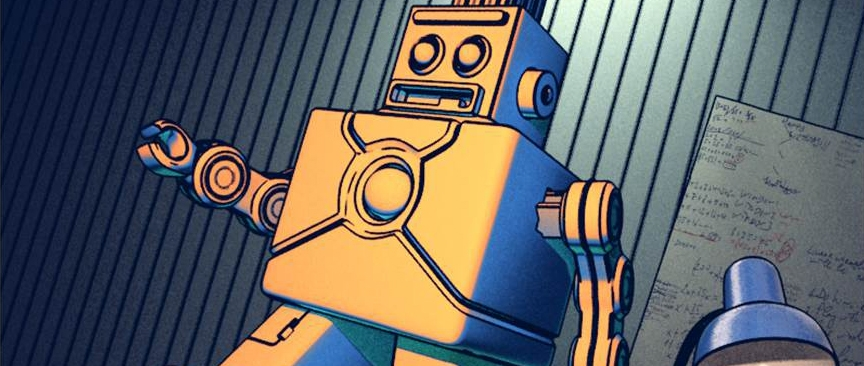Fundamentos de Ilustração
A etapa de line-art é utilizada em apenas alguns tipos de ilustração, em outros tipos, acrescentam-se mais etapas, pois devemos ter em mente que existem diversos tipos de ilustração diferentes, por exemplo, uma ilustração flat é completamente diferente de uma pintura digital conceitual.
Se quiser realmente se dedicar a este tipo de trabalho, recomendo buscar alguns cursos de ilustração e pintura digital e adquirir uma mesa digitalizadora apropriada, já que o mouse não foi criado para desenhar.
Mesa digitalizadora Huion básica:

Algumas dicas ajudam no momento do desenho:
1. Escolha o pincel certo para o que está fazendo.
2. Obedeça aos conceitos de Design Gráfico (veja no último capítulo deste livro).
3. Obedeça aos conceitos de Cor. (Capítulo VII)
4. Saiba utilizar os efeitos de design (Capítulo VI) como simetria, profundidade etc.
5. Treine bastante isoladamente o desenho de objetos, animais, paisagens e formas humanas.
6. Treine o desenho do rosto humano.
7. Não crie do zero, sempre desenhe observando.
8. Não trace por cima, essa prática impedirá sua evolução e pode até te trazer problemas.
Ilustração vetorial vs Pintura Digital
Algumas pessoas dão preferência à ilustração vetorial e creem que conseguem um melhor resultado pelo fato de as formas poderem ser editadas individualmente. Talvez isto seja verdade para quem trabalha unicamente com o mouse, mas torna tudo ainda mais trabalhoso, no entanto as duas maneiras de desenhar são válidas, veja um exemplo de arte criada vetorialmente (no CorelDraw):

A arte acima foi feita por mim mesmo e levou um total de 7hrs para fica pronta. É tudo vetor agrupado!
É claro que o tempo levado para adquirir certo nível de qualidade se torna maior do que quando apenas pintamos com pincéis. Agora veja um exemplo de arte criada em bitmap (nesse caso, utilizando o Krita):
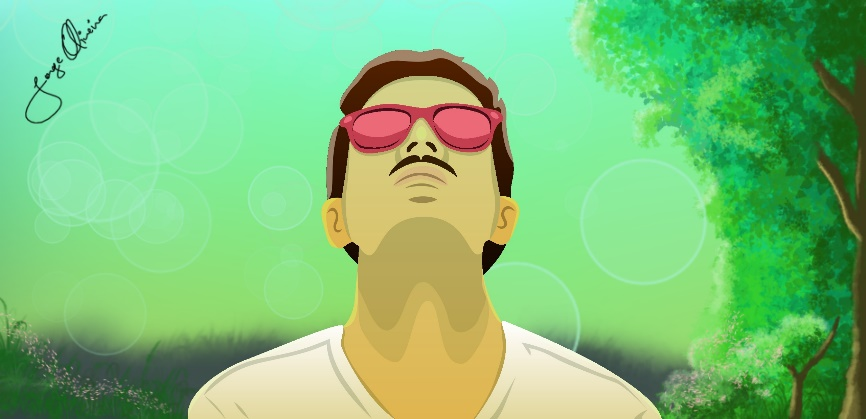A arte acima é um auto-retrato que fiz utilizando o Krita para a pintura de fundo e o Inkscape para o desenho que fiz redesenhando uma fotografia minha, os óculos foram criados na hora do desenho usando uma referência da internet.
Vários softwares podem ser utilizados para pintura e o GIMP é uma ótima ferramenta para isso, tudo é questão de aprender a utilizar o conjunto de pincéis, a ferramenta Pincel se encontra na Barra de Ferramentas à esquerda, e as opções de pincel na barra à direita. O Photoshop também é largamente utilizado para pintura, mas se quiser entrar nesse mundo recomendo fortemente o Krita, que além de ser open-source, é uma das melhores ferramentas já criadas, bem conhecida dos ilustradores.
Tipos de Ilustração
Podemos separar Ilustração de Pintura, pois, apesar de se basearem nas mesmas técnicas criativas, possuem conceitos diferentes, mas no geral, os estilos de ilustração e de pintura podem ser:
Cartoon
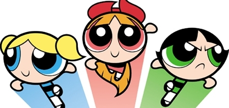Arte conceitual
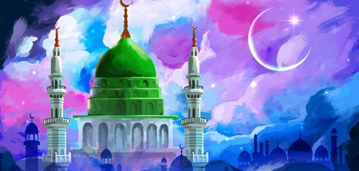Fotorrealismo
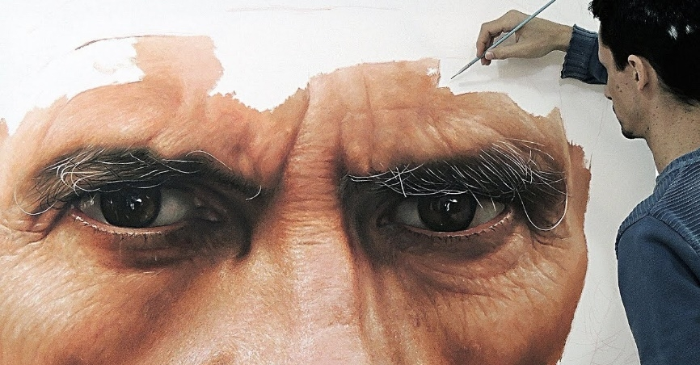Mangá
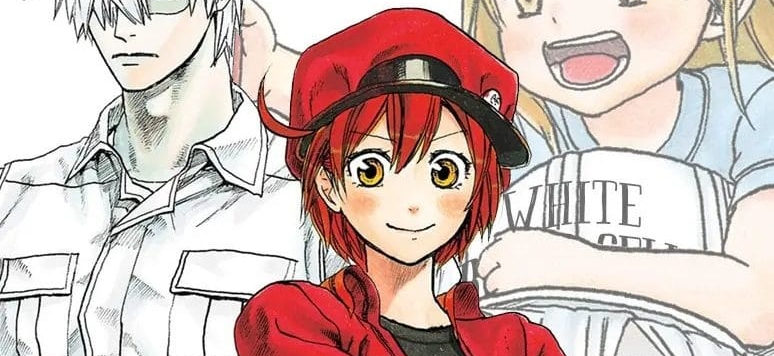Ilustração flat
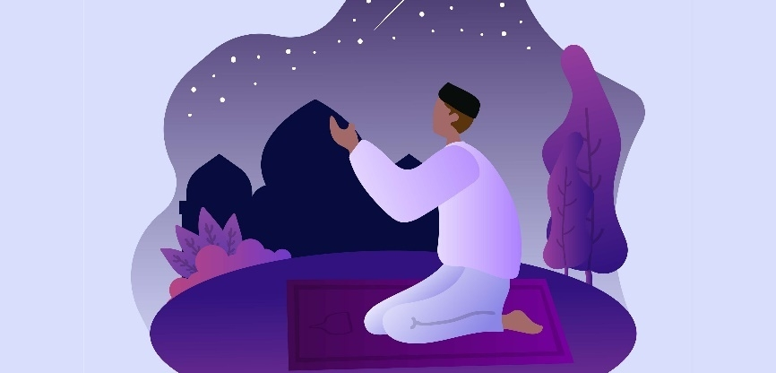Esses são os tipos mais básicos de ilustração e pintura, mas existem ainda outras variações, subdivisões e ainda técnicas utilizadas, como por exemplo, pintura a óleo, giz de cera, etc.